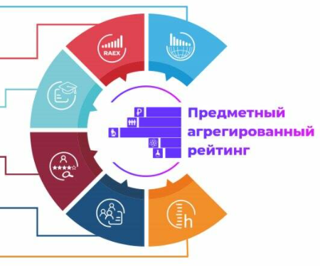
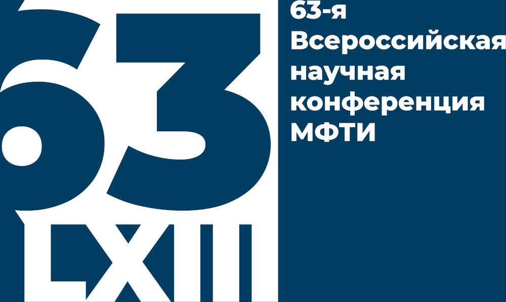

Университет «Дубна» — в первой лиге Предметного агрегированного рейтинга

Образовательные программы университета вошли в первую лигу Предметного национального агрегированного рейтинга по трем укрупненным группам направлений подготовки: «Физика и астрономия», «Информатика и вычислительная техника», «Психологические науки».
Наши студенты стали полуфиналистами Всероссийского конкурса «Твой ход»
Полуфиналистами конкурса стали такие студенты, как Фердерер Валерий – студент 2 курса ЯФТ ИФИ, командный игрок; Гражданов Алексей – студент 1 курса направления «Технология геологической разведки», командный игрок; Писарев Константин – студент 2 курса направления «Экология», командный игрок.
На научной конференции МФТИ лучший доклад - у нашего студента!

Поздравляем Георгия Папояна, студента 2 года обучения ИТ-школы (гр. 4181, направление «Прикладная математика и информатика», ИСАУ), за лучший доклад на Всероссийской научной конференции МФТИ в секции теоретической физики. Тема доклада: «Поведение дикварков в плотной и горячей ядерной материи». Научный руководитель — д. ф.-м. н. Калиновский Ю. Л., ведущий научный сотрудник ЛИТ ОИЯИ, заведующий кафедрой высшей математики государственного университета «Дубна».